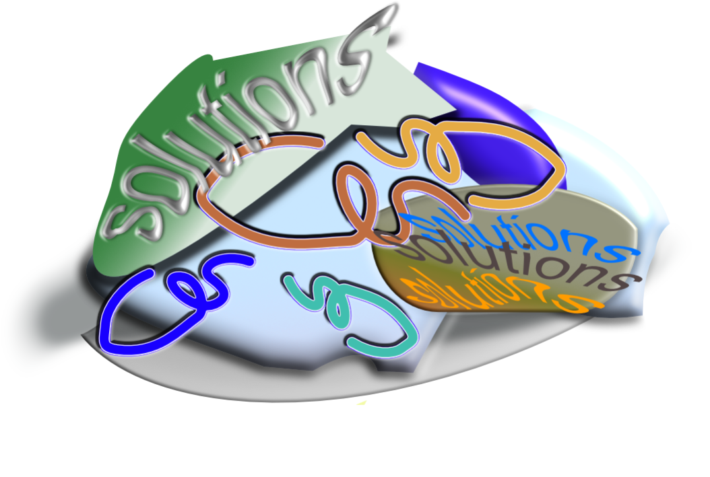

Links & Resources
Helpful texts, sites, and videos on all things related to audio, video, and synthesis.
Intro to Audio / Synthesis Fundamentals
-
ARP 2600 Owners Manual
Essential reading for learning the synthesizer as an instrument.
-
Learning Music With Synthesizers
An approachable primer on sound science written for musicians.
-
An Individual Note — Daphne Oram
A holistic look at the creation of electronic music by a synthesis pioneer.
-
Composing Electronic Music — Curtis Roads
Structured approaches to contemporary composition, time, and timbre.
Synthesis
-
Buchla Cookbook — Suzanne Ciani
Performance-oriented patch ideas pulled from Ciani’s studio notebooks.
-
Microsound — Curtis Roads
Time-scale explorations for granular and microsound composition.
Recording
-
Synthesizers and Recording
Two-page article on recording synths to tape, complete with diagrams.
-
Revox A77 User Guide
Classic reel-to-reel manual for maintenance and alignment.